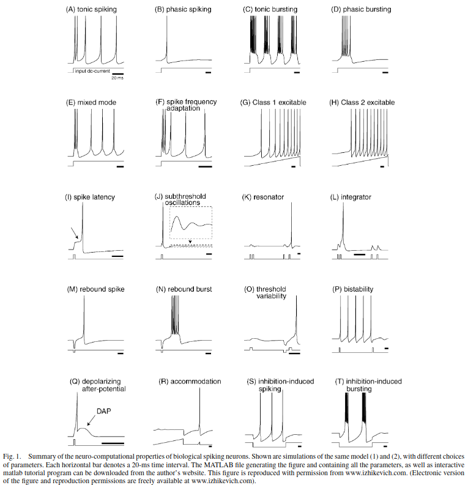
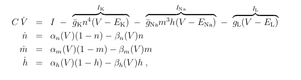
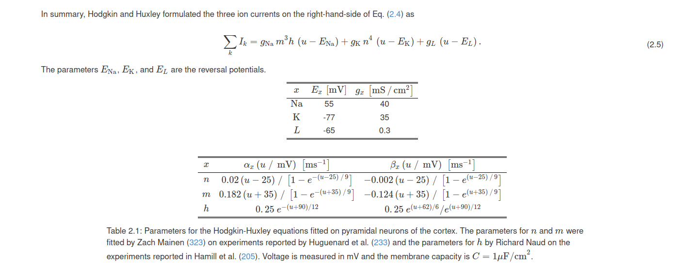

Training Complex Neural Networks on Integration Tasks
Todo
- I WANT TO SEE MORE WEIRD SOLUTIONS AND MORE ROBUST SOLUTIONS!
- We could use longer timeframes and a different training method (neural ODEs) if necessary
- Could we integrate latent factors into training like in Sussillo paper?
- We need to really analyze exactly what's happening
- Visualization of solution from BNN
- Dynamic length inputs
- Fixed inhibitory vs excitatory populations or analyze populations after training
- More neuron models and make infer a [causal] relationship between neuron complexity and solution complexity/characteristics
Interesting Directions 03/19
- Izhikevich neurons. Training these for longer timeframes/learning parameters
- Collection of neurons with different dynamics: e.g. inhibitory/excitatory, Izhikevich bursting/integrators/spiking/resonators, etc. How do roles emerge?
- Solving other tasks (e.g FFT). How can neurons learn to solve this kind of task? What dynamics emerge?
Introduction
The topic of this article is my current work on training biological neural networks on integrator style tasks. These tasks require a network to accumulate evidence over a particular timeframe and output what occurs most, with some modifications for more complex problems. Here's a more formally worded introduction to the problem:
In order to understand how the brain works at even an extremely minimal scale, we believe it is absolutely necessary to devise efficient means of training computational models of biological processes occurring within the brain to solve particular tasks. With such tools, one can understand how a population of neurons with particular characteristics can solve tasks such as implementing working memory, decision making, natural language formation, vision, etc. Many recent papers have focused on biologically plausible learning rules (CITE HELENA LIU). However, in this work we focus primarily on efficient training of biological neurons with less emphasis on plausibility. In particular, we use direct backpropagation-through-time (BPTT) (AND NEURAL ODES?). Although solutions obtained may not translate to what is observed experimentally (CITE NO FREE LUNCH), they can still provide insights into how complex neuronal populations can solve diverse tasks. The underlying neurons in such populations are extremely complex compared to artificial neural networks, so manually fitting such populations to solve even very basic tasks is extremely nontrivial.
In this work, we focus on training biological neural network models composed of individual biophysical components according to dynamics given by the Hodgkin-Huxley (HH), Morris-Lecar (ML) and Izhikevich (IZ) models, among others. We demonstrate that conventional BPPT (AND NEURAL ODES?) can effectively train such networks with interpretable results. In particular, we train populations of neurons on the ubiquitous neuroscience "DOTS task" which requires accumulation of evidence with specified timescales that may far exceed those of the underlying neuron model. We chose this task because it fundamentally tests how neurons can form working memory and has been extremely well studied in the neuroscience literature with hand-crafted solutions for simple neuron models such as Leaky Integrate-and-Fire (LIF) (CITE WANG, MORE).
Our work focuses on how introducing more complex neuronal dynamics can influence the solution learned on the integration task. In particular, we observe that different neuronal models such as integrators (CITE) and resonators (CITE) solve the task in a different way and that using more complex neuronal models leads to higher dimensional solutions heavily reliant on oscillation (WE NEED TO SHOW THIS!).
Setup and Internal Details
One of the most important things that I have to be careful about is the internal details related to this project. We have a ton of different hyperparameters and choices. These include:
- Neuroscience Related
- Choice of neuron model: LIF, HH, ML, IZ, etc. Also, include noise?
- Choice of numerical method: trapezoidal rule (simple, not exact), implicit methods (hard to implement and use), explicit methods (need small DT)
- Type of coupling: direct input current vs synaptic gating variable
- Thing to vary: complexity, resonator vs integrator
- Fixed inhibitory vs excitatory population
- Task Related
- What tasks should we use? Right now we've focused on discrete integration
- Other choices related to integration include contextual integration, continuous integration
- We could also train on a more complex ML tasks. But including a lot of this could just distract from the message. There's a lot already related just to discrete integration
- Discrete Integration Related
- Timeframe to use
- Evidence timescale and # of evidence inputs
- Use a delay?
- Dynamic length inputs
- Training Related
- Choice of training method: BPTT, neural ODEs, approximate gradient
- Train neuronal parameters as well as weights and biases?
- Network architecture to use
Neuroscience Related
Task Related
Results for Different Neuronal Models
Useful Reference
Izhikevich has done a ton of work categorizing neuronal dynamics and he has many great papers that are super good references. The figure below summarizes the variety of all dynamics observed for an individual neuron. These (I believe) were all simulated with his Izhikevich (IZ) model.
Hodgkin-Huxley Vanilla Model
For this model, I got it from the book Dynamical Systems in Neuroscience by Izhikevich (which is a great book!) and the same model is in Neuronal Dynamics by Gerstner et al. (which is also super good and has better code, but less of a comprehensive focus on individual neuron models). Note that the reversal potentials in the Izhikevich book are the only difference and they're just shifted by +65 (which was what Hodgkin-Huxley did in their original paper), so the models are the same.
The Hodgkin-Huxley model has the following form:
Here are the gating functions and constants:
Validation of Numerical Method
To validate the model I compared against ode15s. Sadly, this required me to use matlab. This is a sad situation but necessary.
Training Details
I managed to train this model to above 95% validation/test accuracy on the discrete integration task. TODO: add accuracy plots here.
Analysis of Learned Results
Useful References
- ...